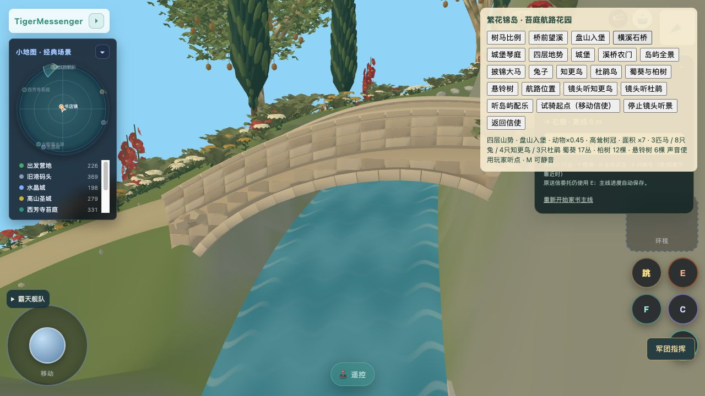
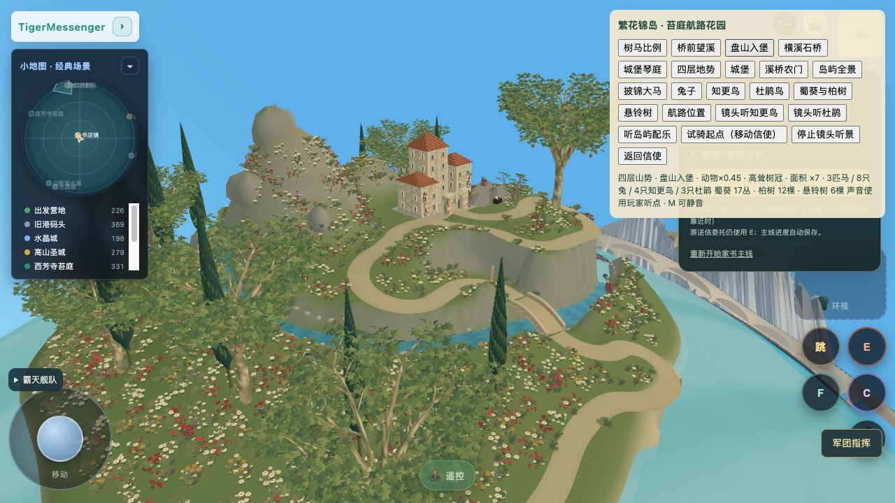
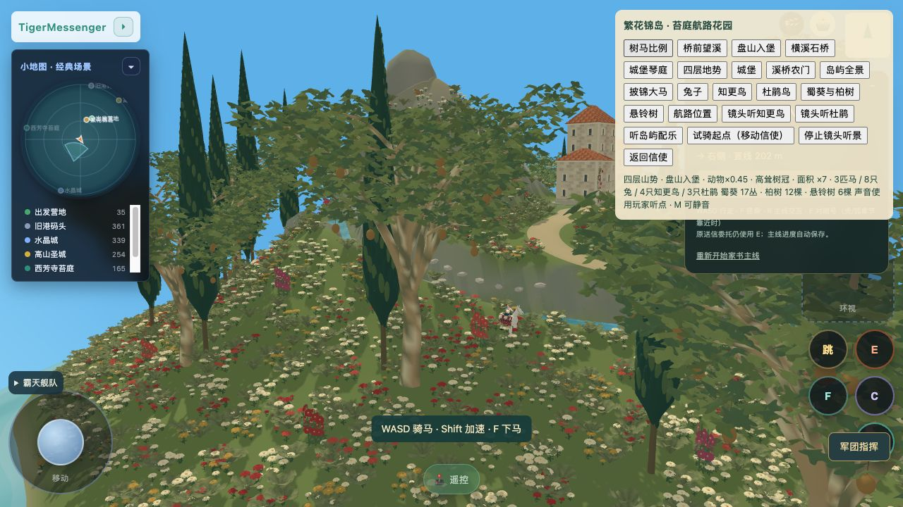
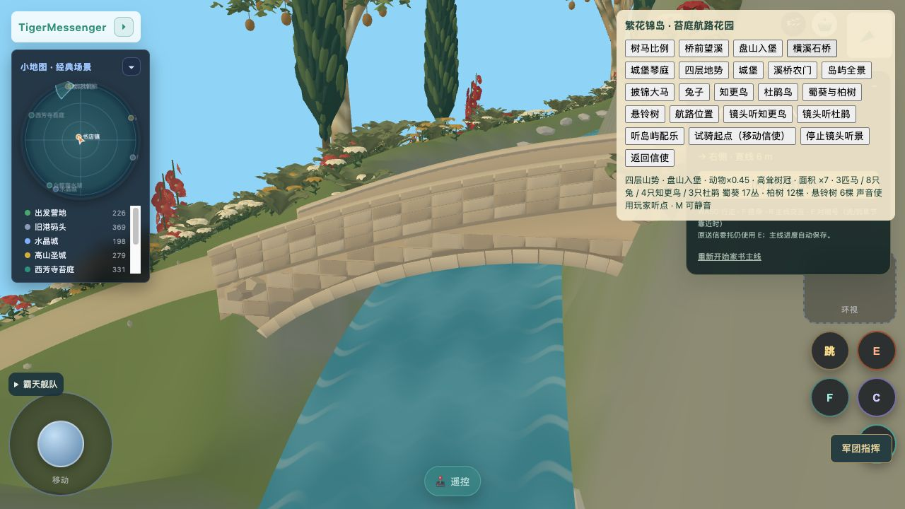

当前正式游戏 r35 实景。道路加了真实轻横坡、路沿过渡与碎石，坡肩更宽；悬铃增高并展开分枝树冠，尖柏改为连贯细叶冠；溪流细化水纹与岸石。

桥面相对端线冠高由0.25增至0.75米，拱腹同步抬高；连续压顶、护墙及楔形拱券替换锯齿块。跨度8米、净宽3.2米保持。实际桥面最大径向坡约28.6%，完整正常骑乘过桥未验收。

前景高树曾挡住原总览桥景，已侧移并抬高总览机位；不是严格同机位对照。
正式游戏明确点击试骑起点后按F骑上原马，再通过树马比例摄影检查；没有把它当步行抵达或全路线骑乘证明。悬铃约16–23米，尖柏约20–27米，骑手连马明显不到树高一半。

认可对象目标图 · 改动与差距 · 状态和验证 · 正式游戏
尚未完全达到目标图的挂毯细节；花草与小动物进一步细化、完整骑马盘山和新桥通行仍待后续验收。